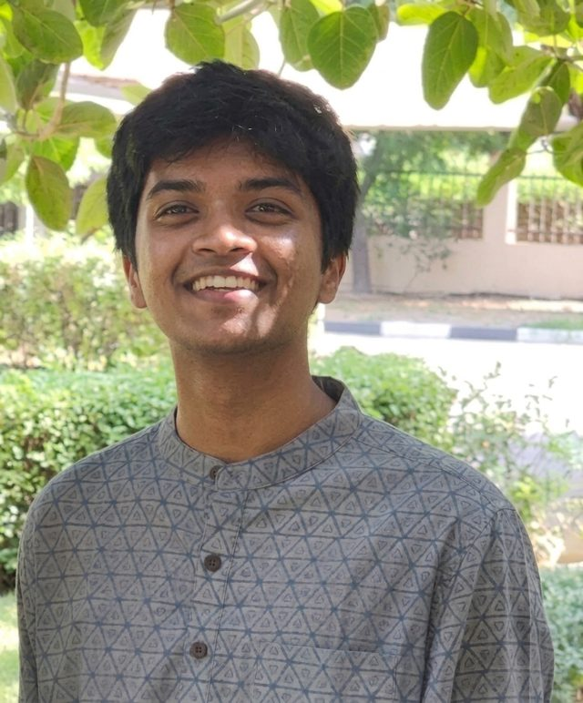

I’m a second-year student who likes problems where randomness has structure. Right now that means JEPA and self-supervised learning, rough volatility in crypto options, coagulation–fragmentation equations, and using machine learning to put honest error bars on predictions.
Currently
Learning and building with JEPA
Joint-Embedding Predictive Architectures
Studying self-supervised models that predict in representation space instead of reconstructing raw inputs, and working through implementations of them.
Stochastic particle dynamics, with a professor
Feb. 2026 to present
Building Monte Carlo solvers in Python for coagulation–fragmentation and Becker–Döring equations, to model steady-state cluster distributions and their uses in financial markets.
Projects
Crypto options volatility modelling
Python, Deribit API, NumPy, SciPy · 2026
- Wrote rough Bergomi and rough Heston option pricers from scratch to test for rough volatility in BTC and ETH.
- Simulated fractional Brownian motion with the BLP hybrid scheme and solved fractional Riccati equations.
- Estimated the Hurst parameter with the Gatheral–Jaisson–Rosenbaum method and checked it using Fukasawa’s approach.
- Calibrated SSVI, SABR, Heston and rough Bergomi to live Deribit order book data.
Cost overrun prediction for hydroelectric projects
Python · machine learning and Monte Carlo
An integrated framework that predicts cost overruns and supports decisions for hydroelectric projects in Uttarakhand and Himachal Pradesh. It includes data analysis, per-model feature importances, and Monte Carlo cost overrun distributions for existing dams.
Black–Scholes and Monte Carlo
Python · stochastic calculus
Applies and compares Monte Carlo simulation against the Black–Scholes model.
SPY analysis
Jupyter Notebook · algorithmic trading
A folder of notebooks for algorithmic trading experiments on SPY.
Experience
AI Research Publication Coordinator, AGCOE
BITS Pilani, Dubai Campus · 2026 to present
Coordinating AI research publications: literature reviews, manuscript preparation and peer-review workflows with researchers.
ML Research Intern, IIT Roorkee
ML-based cost overrun prediction · June to July 2026
- Built geospatial and climate feature pipelines (GIS, IMD, CHIRPS, CHIRTS) over about 10,000 data points.
- Benchmarked supervised models for infrastructure cost overruns and found the best performer.
- Added Monte Carlo simulation on top to quantify prediction uncertainty and classify project-level financial risk.
Competitions
IMC Prosperity 2026, finalist. Ranked first nationally in manual trading; 3275th of 18,803 teams globally.
QRT Asset Allocation Challenge 2026 (M2PF Data Challenge, École Polytechnique). Scored 0.5158 against a 0.50 benchmark, top 10 on the private academic leaderboard.
Education
BE Mathematics and Computing, BITS Pilani, Dubai
Sept. 2024 to June 2028 · Current CGPA 8.98 / 10
Deep Learning, Stochastic Calculus and Applications to Finance, Probability and Statistics, Linear Algebra, Numerical Analysis, Numerical Optimization, DSA.
Tools
- Languages
- Python (NumPy, SciPy, Pandas, scikit-learn, PyTorch, Matplotlib), R, C++, C
- Work
- Git, Jupyter, VS Code, LaTeX
- Interests
- Stochastic processes, time series, quant strategies, AI research